地政学
アクラはガーナの大統領府、官庁、議会、外交機関が集まる首都です。ECOWAS、西アフリカ沿岸、ギニア湾の安全保障、汎アフリカ主義の記憶が重なり、独立広場や記念碑も政治の場所として機能します。選挙と式典も街に表れます。
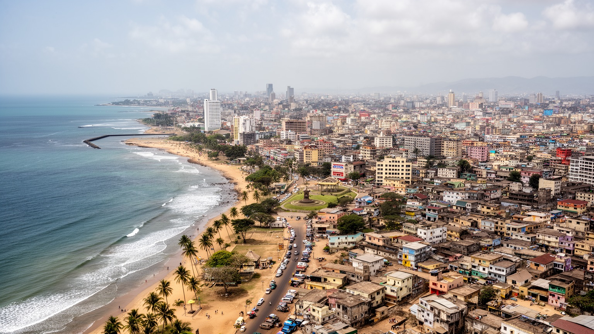
🇬🇭 ガーナ / 西アフリカ / World City Atlas
独立国家ガーナの政治中枢であり、ギニア湾の港湾、商業、通信、音楽、宗教、移民労働、海岸の暮らしが重なる西アフリカの首都です。
都市の骨格
アクラは独立広場と官庁街、マコラ市場、コトカ国際空港、テマ港へ続く物流、海岸の漁村、内陸へ広がる住宅地を同じ都市圏に抱えます。
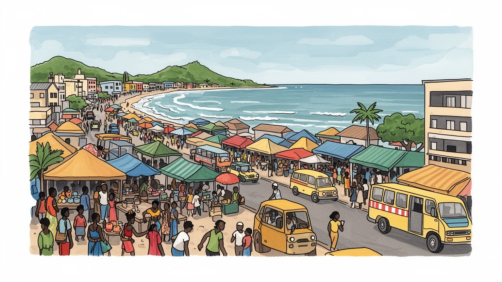
アクラはガーナの大統領府、官庁、議会、外交機関が集まる首都です。ECOWAS、西アフリカ沿岸、ギニア湾の安全保障、汎アフリカ主義の記憶が重なり、独立広場や記念碑も政治の場所として機能します。選挙と式典も街に表れます。
行政、銀行、保険、通信、貿易、港湾物流、建設、教育、創造産業が都市を動かします。市場商人、乗合バスの運転手、港湾労働、家事労働、露天販売が厚く、公式と非公式経済が交わります。価格変動も暮らしに響きます。
キリスト教、イスラム教、伝統的な祭礼、ガ語の地域文化、ハイライフ、アフロビーツ、映画、ラジオ、服飾が都市の表情を作ります。葬礼、日曜礼拝、市場の掛け声も、街の時間を形作ります。祈りと音楽が支えです。
独立広場、クワメ・ンクルマ記念公園、ジェームズタウン、ラバディ海岸、マコラ市場は強い入口です。一方で住民には渋滞、住宅費、洪水、廃棄物、海岸浸食、雇用不安が日々の論点です。観光と生活が近くで重なります。
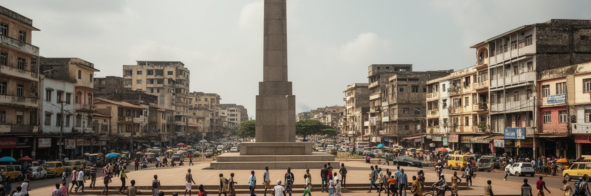
アクラはガーナの首都として、独立国家の記憶と現在の政治を同じ空間に置いています。独立広場、黒い星の門、クワメ・ンクルマ記念公園、大統領府、官庁、議会、裁判所、各国大使館は、観光名所であると同時に国家の儀礼と抗議の場所です。ガーナはサハラ以南アフリカの独立運動を象徴する国であり、アクラには汎アフリカ主義、植民地支配からの離脱、軍政と民主化、政権交代を経た市民政治の記憶が残ります。式典の日には広場が国家の舞台になり、選挙期には政党、報道、市民団体の声が街路に出ます。政治の中心は整った記念空間だけではありません。役所へ行く人、許認可を待つ事業者、抗議に集まる若者、警備を担う人、報道カメラの位置までが首都の機能を作ります。アクラを読むには、独立の象徴を眺めるだけでなく、その象徴が現在の雇用、物価、汚職、公共サービス、地方との格差をめぐる議論にどう接続しているかを見る必要があります。国家の物語は記念碑に固定されず、住民が行政へアクセスできるか、政策が市場や海岸の生活へ届くかで評価されます。首都であることは誇りであると同時に、国全体の矛盾が集まる責任でもあります。地方から来た人にとって、アクラは政府へ近づく場所であり、同時に住居費や交通費の高さで距離を感じる場所でもあります。首都の近さは希望であり負担です。
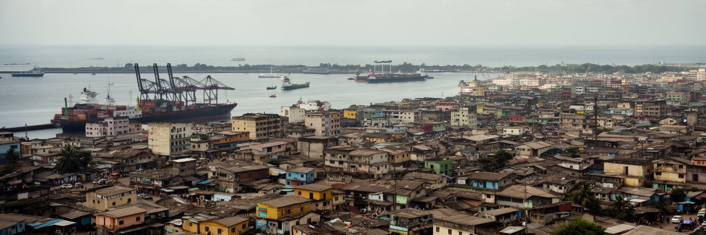
アクラの海は、休日の景色である前に、ギニア湾の物流と安全保障を支える実用の空間です。市中心の東にあるテマ港は、ガーナの輸出入、石油製品、コンテナ、食品、建材、機械、消費財を扱い、アクラの商業、倉庫、銀行、保険、トラック輸送と強く結びつきます。ココア、金、石油、加工食品、輸入日用品の流れは、港の岸壁だけで完結せず、マコラ市場、工業地帯、空港周辺、内陸都市へ向かう道路網へ広がります。港湾が滞れば、店頭価格、建設現場、製造業、農産物流通、雇用に影響します。海岸には漁村も残り、チョルコルやジェームズタウンでは小型漁船、燻製、網の修理、家族経営の販売が生活を支えます。一方で沿岸浸食、海洋ごみ、港湾拡張、観光開発、漁獲の不安定化が重なり、海をめぐる利益は均等ではありません。アクラを読むには、テマ港のクレーンと市場の荷下ろし、漁民の朝、トラックの渋滞、税関、港湾労働の安全を一つの経済として見る必要があります。港は国家の外貨獲得と日常消費をつなぐ装置であり、同時に沿岸の住民が生活を守る場所でもあります。海へ開く首都であることは、物流の効率だけでなく、海岸の公共性と漁業の持続性をどう守るかという課題を伴います。港湾投資が進むほど、周辺の道路、住宅、排気、騒音、若い労働者の訓練も都市政策の一部になります。
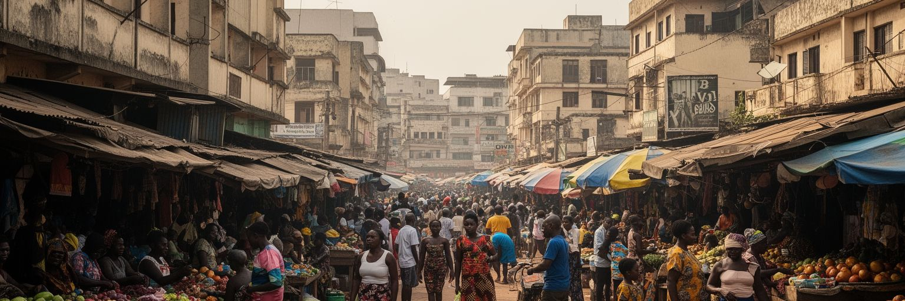
アクラの経済を理解するには、銀行や官庁だけでなく、マコラ市場とその周辺を歩く必要があります。布、食品、携帯電話、化粧品、輸入雑貨、鍋、靴、学校用品、薬、祈りの品までが密集し、商人、荷運び、仕入れ人、路上販売者、両替、食堂、清掃、交通が一体で動きます。市場は単なる買い物の場所ではなく、信用、親族関係、女性商人の資本、地方からの農産物、港からの輸入品、スマートフォン決済、日々の価格交渉が交差する制度です。公的な統計に入りにくい小商いは、都市の家計を支え、若者や移住者に働く入口を与えます。しかし、営業許可、徴税、道路占用、火災、衛生、警察との関係、価格高騰は常に負担になります。市場の混雑は混乱に見えますが、そこには商品知識、取引先の記憶、言語の切り替え、客の信用を読む技能があります。アクラを読むには、公式なビジネス地区の数字だけでなく、朝に商品を運ぶ頭載せ労働、値段を決める会話、雨の日の排水、揚げプランテンやケレウェレの匂いまでを見る必要があります。非公式経済は都市の弱さではなく、多くの世帯が不安定な制度の中で生活を組み立てる知恵です。ただし、その知恵へ頼りすぎれば、年金、保険、労働安全、保育、病気への備えが個人に押し付けられます。市場は活気の象徴であると同時に、都市政策が最も現実的に試される場所です。
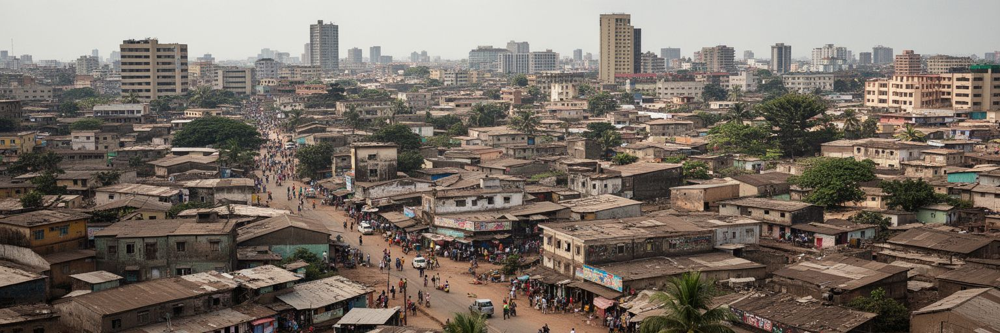
アクラの人口増加は、中心市街だけでなく大アクラ地域全体へ都市を広げています。官庁、学校、病院、商業、空港、港湾に近い土地は高くなり、中所得層はゲーテッド住宅や郊外住宅へ、低所得層はインフォーマルな借家や周縁の住宅地へ押し出されやすくなります。アシアイマン、マディナ、アドンタ、テマ方面、カスア方面へ生活圏が伸びるほど、通勤時間、燃料費、乗合バスの乗り換え、道路渋滞が家計を圧迫します。土地所有は慣習的権利、家族、首長制、登記制度、民間開発が絡み、誰が確実な権利を持つかが分かりにくい場合もあります。住宅不足は、屋根の数だけの問題ではありません。水道、排水、電気、学校、医療、道路、廃棄物収集、洪水対策がそろわなければ、住まいは不安定なままです。中心部の再開発や高層ビルは都市の成長を示しますが、労働者が近くに住めなくなれば、都市の機能は長い通勤に依存します。アクラを読むには、ビジネス街の新しい建物と、郊外で建設途中の家、共同水栓、未舗装路、宿題をする子どもと涼む高齢者を同時に見る必要があります。住宅は投資商品である前に、都市で働き、学び、介護し、祈り、休むための基盤です。広がる都市を支えるには、道路を増やすだけでなく、生活の近くに仕事と公共サービスを配置する発想が必要です。借家人の権利、若者の住宅取得、低地の安全な改修を扱えるかで、都市拡張の質が決まります。
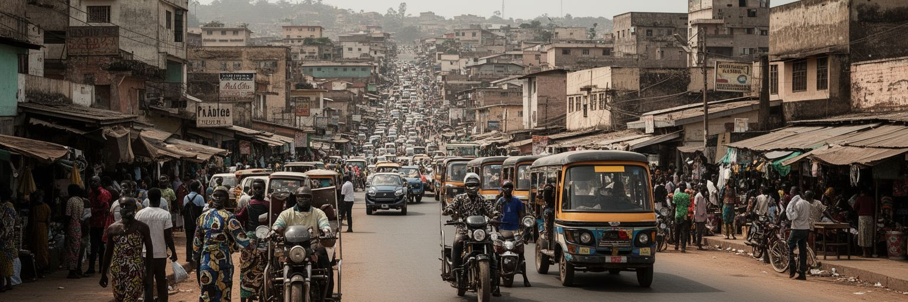
アクラの日常は、トロトロと呼ばれる乗合ミニバス、タクシー、配車サービス、徒歩、オートバイ、私用車が複雑に重なって動きます。都市鉄道や大量輸送の不足を、民間の乗合交通が埋めてきました。トロトロは安く柔軟で、住宅地、市場、学校、港湾、工業地帯、官庁街を細かくつなぎますが、混雑、待ち時間、事故、排気、運賃交渉、運転手と車掌の労働条件も論点です。朝夕の渋滞は、都市の成長が道路容量を超えていることを示します。時間に余裕がある人とない人、職場へ遅れられない人、荷物を持つ市場商人、子どもを送る親、夜間に働く人では、同じ渋滞の重さが違います。空港や主要幹線道路の整備は国際都市としての顔を作りますが、歩道、排水、横断、照明、停留所が弱ければ、日常の安全は守れません。アクラを読むには、車窓から見るビルだけでなく、行き先を叫ぶ車掌、クラクションとラジオ、ハルマッタンの埃と熱、雨の日にぬかるむ歩道、燃料価格に左右される運賃を見る必要があります。交通は単なる移動手段ではなく、誰が都市の機会へ届くかを決める社会制度です。より公正な都市にするには、民間交通の技能を認めながら、安全、労働、料金、乗り換え、歩行空間を一体で改善する必要があります。バス優先策や歩道整備が進めば、低所得の通勤者ほど時間と体力を取り戻せます。
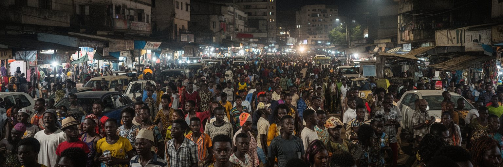
アクラの文化は、独立記念碑や博物館だけでなく、夜の音楽、ラジオ、教会の合唱、ストリートファッション、映画、SNS、大学の議論に息づいています。ハイライフ、ヒップライフ、アフロビーツ、ゴスペルは、ガーナの歴史、英語と現地語の混交、移民の経験、若者の夢を運びます。オス、ラボネ、イーストレゴン、ジェームズタウンなどでは、クラブ、バー、スタジオ、ギャラリー、路上イベントが異なる客層を引き寄せ、音楽は観光と地元の生活を結びます。チャレ・ウォテの路上芸術やホモウォの祭礼は、地区の記憶を更新します。創造産業は才能を世界へ送り出す一方、録音費、著作権、会場不足、警備、夜間交通、家賃、機材輸入の負担を抱えます。若者文化は華やかに見えますが、失業や不安定な仕事、海外移住への憧れ、教育費、家族への仕送りと隣り合っています。アクラを読むには、人気曲のリズムだけでなく、録音スタジオの家賃、衣装を縫う人、ポスターを貼る人、配信で収益化する難しさ、教会音楽が地域を支える力まで見る必要があります。音楽は娯楽であると同時に、都市の言語、信仰、政治的皮肉、若者の自己表現をまとめる公共圏です。世界市場へ接続するほど、地元の会場と教育機会を守ることが重要になります。アクラの音は、首都の硬い政治空間を柔らかくし、若者が都市の未来を問い直す力になります。
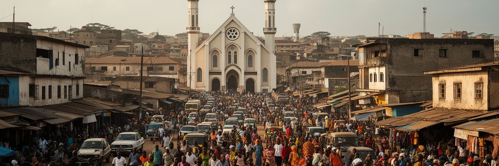
アクラでは、信仰が都市の時間割を作ります。日曜の教会、平日の祈祷会、ペンテコステ派の礼拝、カトリックやメソジストの学校、モスクの礼拝、ラマダンの食、伝統的な祭礼、葬礼の集まりが、家族、仕事、音楽、衣服、食事、地域の助け合いを結びます。キリスト教が多数派である一方、イスラム教徒の商人や移住者、ガの伝統的権威、祖先祭祀、首長制の儀礼も都市の公共性に関わります。葬礼は悲しみの場であると同時に、親族関係、音楽、仕立て、料理、交通、写真、印刷、献金を動かす大きな社会行事です。信仰施設は祈る場所にとどまらず、教育、相談、就職紹介、貧困支援、移民の受け皿、政治的動員の場所にもなります。宗教は都市を支える力ですが、騒音、土地利用、教会ビジネス、信仰と医療、若者への規範をめぐる議論もあります。アクラを読むには、礼拝堂の数を数えるだけでなく、祈りがどのように家計、学校、病気、失業、結婚、移住、葬送を支えているかを見る必要があります。宗教は私的な信念であると同時に、公共サービスが届きにくい場所で互助を作る制度です。その力を尊重しつつ、行政、医療、教育、ジェンダー平等とどう協力するかが、都市の包摂を左右します。礼拝の音、葬礼の行列、祭礼の道路利用は、信仰が公共空間を形作る具体的な場面です。街の秩序にも関わります。
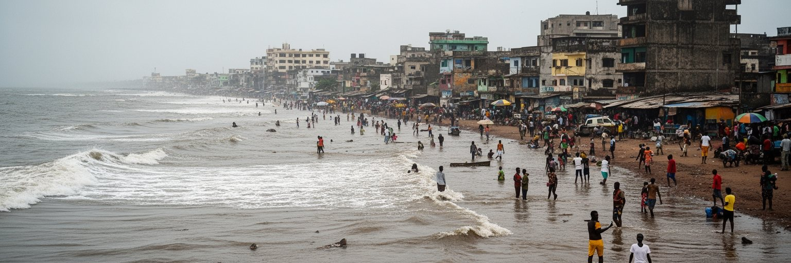
アクラの気候は熱帯サバナで、暑さ、湿気、雨季と乾季の差が生活を左右します。大雨のたびに排水路、低地住宅、未舗装道路、市場、交通、廃棄物管理の弱さが表面化し、洪水は家財、商売、学校、病院への移動を直撃します。都市化で湿地や自然排水路が埋められ、住宅や道路が増えるほど、雨水の逃げ場は減ります。海岸では浸食、高潮、海洋ごみ、砂浜の減少が進み、漁業、観光、住宅、文化的な海辺の記憶に影響します。チョルコルやジェームズタウンのような沿岸地区では、海は収入源であり、危険でもあります。気候リスクは全員に同じ形で来るわけではありません。丈夫な家、高い土地、自家用車、貯水設備を持つ人と、低地の借家やインフォーマル住宅で暮らす人では、雨の日の被害が違います。アクラを読むには、青い海岸の写真だけでなく、雨水がたまる交差点、詰まった側溝、海へ流れるプラスチック、避難しにくい家、熱のこもる部屋を見る必要があります。気候対策は堤防や排水工事だけではなく、廃棄物収集、土地利用、住宅改善、早期警報、保険、地域の清掃活動と結びつきます。都市が成長するほど、自然の水路を尊重し、貧しい地区ほど先に守る設計が求められます。排水路にごみが詰まる問題は、清掃の不足だけでなく、収集制度、消費、土地利用がつながった問題でもあります。
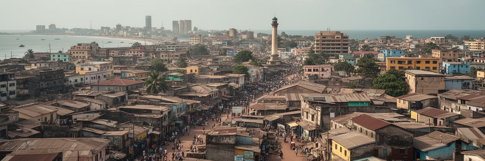
アクラ観光は、独立広場、黒い星の門、クワメ・ンクルマ記念公園、国立博物館、ジェームズタウン灯台、ウッシャー要塞、ラバディ海岸、アートセンター、市場、音楽の夜を結びます。短い滞在でも、独立国家の記憶、奴隷貿易と植民地支配の痕跡、海岸の漁村、現代の創造文化を一度に見られます。ただし、観光は記念碑を巡るだけでは都市を読み切れません。ジェームズタウンには家族、漁業、ボクシングジム、教会、古い家屋、路地の商いがあり、外からの視線が地域の生活を商品化する危険もあります。試合の日のサッカー談義やジムの打撃音も、観光写真の外にある都市のリズムです。海岸のリゾートやカフェは雇用を生みますが、価格上昇、土地利用の変化、清掃や警備の労働を伴います。歴史地区の保存も簡単ではなく、老朽建物、住民の住宅需要、道路整備、観光収益の配分を調整しなければなりません。アクラを読むには、記念碑の前で写真を撮るだけでなく、その記念碑がどの歴史を語り、どの生活を背景にしているのかを考える必要があります。観光の価値は訪問者の感動だけでなく、地域住民が海辺や路地を使い続けられるかで測られます。ガイド、職人、演奏者、屋台、清掃員、警備員へ利益が届くほど、観光は都市の記憶を守る力になります。保存と再開発の判断には、住民の家賃や漁業の動線も含める必要があります。
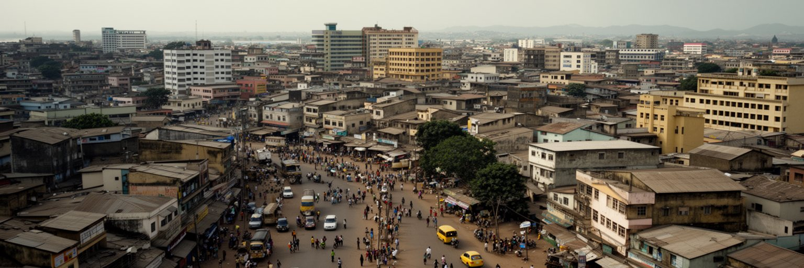
アクラはガーナ国内の首都であると同時に、西アフリカの人材、ビジネス、国際機関、メディアが集まる接続点です。コトカ国際空港は、ロンドン、イスタンブール、ドバイ、アディスアベバ、ラゴス、アビジャンなどへ都市を結び、出稼ぎ、留学、外交、援助、投資、観光を運びます。ガーナ大学や専門学校、研究機関、私立大学、国際学校は、官僚、技術者、医師、教師、起業家、芸術家を育てます。英語圏であることは国際ビジネスや教育の強みですが、地域言語や家庭の教育格差を消すわけではありません。高い授業料、就職難、インターンの無給労働、海外移住への期待は、若者の選択を複雑にします。通信企業、フィンテック、ラジオ局、テレビ局、SNS発信、スタートアップは都市の新しい顔を作りますが、電力、通信費、資金調達、法制度、人材流出の課題も残ります。アクラを読むには、空港の近代的なターミナルと、奨学金を探す学生、共同オフィスで働く若者、海外の親族からの送金、国際会議の警備を同時に見る必要があります。国際接続は富を呼び込むだけでなく、外の基準で都市を測られる圧力も生みます。教育と空港が開く回路を、国内の雇用、公共研究、地域産業へどうつなぐかが、アクラの長期的な力を決めます。卒業後に残れる仕事が増えれば、国際的な学びは移住だけでなく、地域を変える力になります。
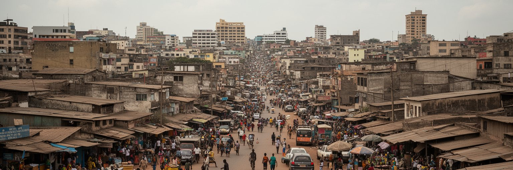
アクラを世界都市として読む理由は、巨大な摩天楼の数ではありません。独立国家の政治、汎アフリカ主義の記憶、ギニア湾の港湾、テマとの物流、マコラ市場の商業、チョルコルの漁業、教会とモスク、音楽と若者文化、洪水と海岸浸食、広がる住宅地が、同じ都市圏で互いに関係しているからです。アクラはガーナの行政と金融を集める中心でありながら、非公式経済と家族ネットワークに支えられる生活都市でもあります。独立広場の象徴性は強いですが、住民にとって重要なのは、仕事へ行ける交通、雨で沈まない道、清潔な排水、手ごろな家賃、学費を払える収入、病気のときに頼れる施設です。観光客が見る海岸と市場は魅力的ですが、その背景には漁業の不安、廃棄物、地価上昇、警備や清掃の労働があります。アクラの強さは、国家の物語と日常の実務が近くにあることです。記念碑、港、教会、市場、大学、トロトロ乗り場を分けずに見ると、都市の成長が誰の時間と労働で支えられているかが分かります。これからのアクラに必要なのは、国際投資や創造産業を伸ばすだけでなく、排水、住宅、公共交通、沿岸保全、市場労働を同じ都市政策として扱うことです。首都の価値は、国家を代表する顔と、住民が毎日使う場所の両方を守れるかで決まります。小さな市場の通路や排水路まで見れば、都市の未来はより具体的になります。